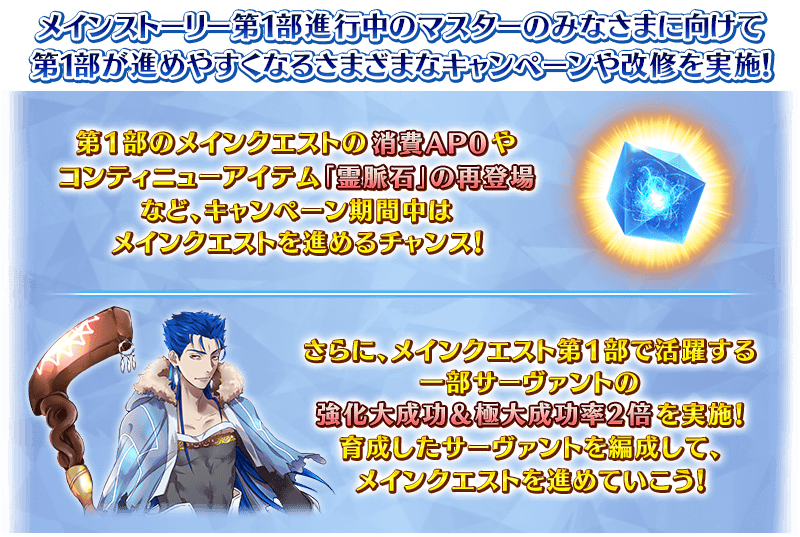
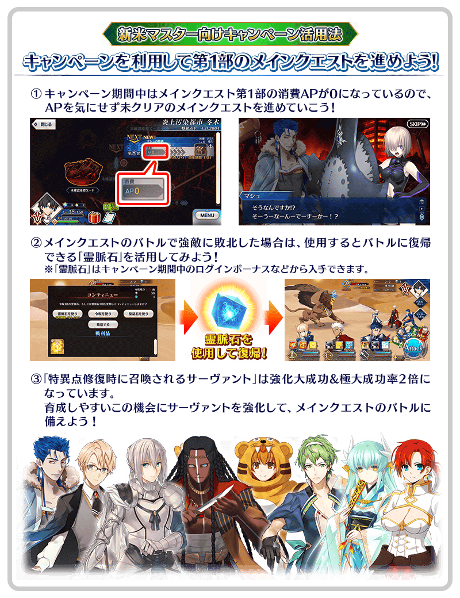
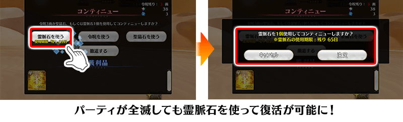
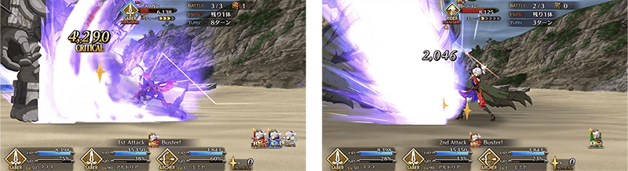
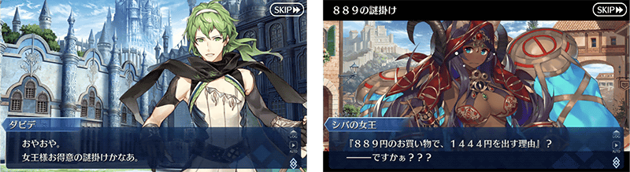
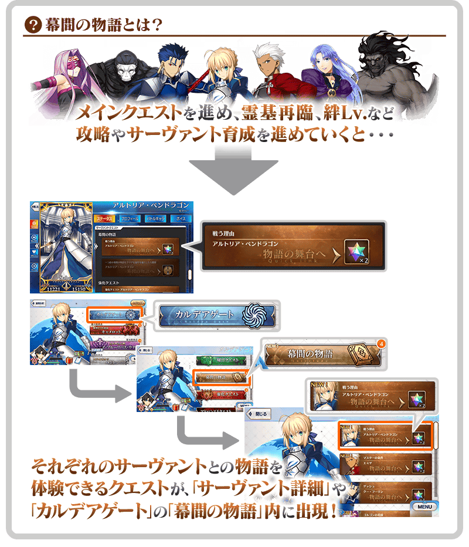
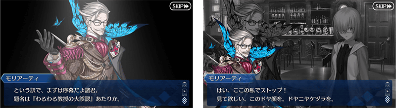
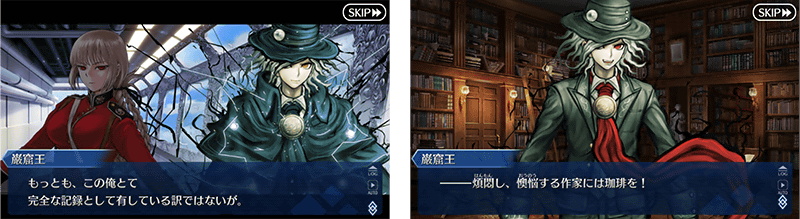
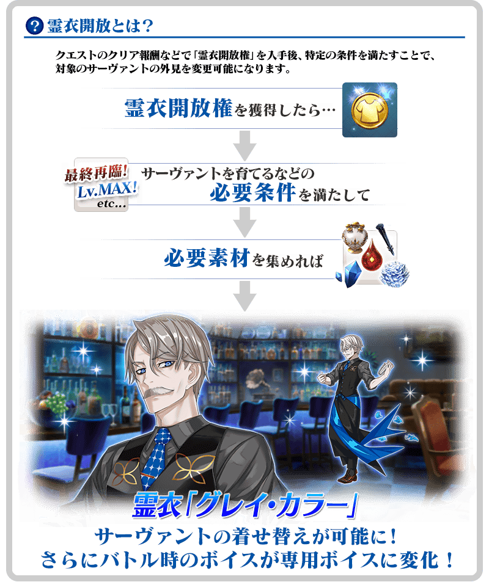
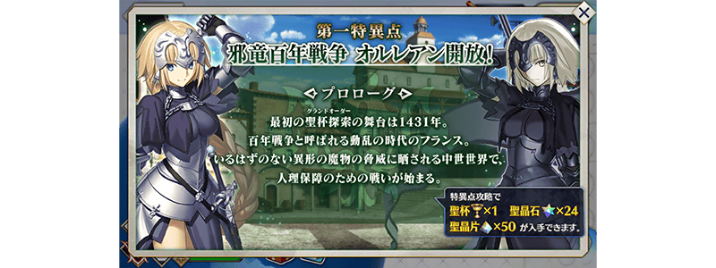

朝向新手御主及主線故事第1部進行中的御主的各位，實施更容易推進第1部的各種宣傳活動和修改！
由於會依序實施對應各章的宣傳活動，活用本宣傳活動來推進主線故事吧！

※11月27日(日) 17:00更新
※本宣傳活動的內容雖然朝向新手御主及主線故事第1部進行中的御主的各位，但所有的御主皆為宣傳活動的對象。 ※本頁面皆為開發中圖片。會有與實際圖片相異的情況。
◆實施時間◆
2022年10月27日(四) 17:00～11月30日(三) 11:59

【11/27更新！】 ■示巴女王(米德拉什的Caster)的幕間物語追加＆就算未召喚對象從者也開放！NEW
【已刊載的宣傳活動】 ■第1部的主線關卡的消耗AP以期間限定0！ ■接關道具「靈脈石」以期間限定再登場！ ■在達文西工房的「魔力稜鏡交換」追加以期間限定靈脈石！ ■特特異點修復聲援宣傳活動特別次數登入獎勵舉辦！ ■「在特異點修復時召喚的從者」的強化大成功＆極大成功率以期間限定2倍！ ■宮本武藏(Saber)的「強化關卡」追加！ (11/26更新) ■通過「亞種特異點Ⅲ」後免費開放「宮本武藏體驗關卡」！(11/26更新) ■詹姆斯・莫里亞蒂(Archer)(新宿的Archer)的幕間物語追加＆就算未召喚對象從者也開放！(11/24更新) ■巖窟王 愛德蒙・唐泰斯的幕間物語追加＆就算未召喚對象從者也開放！(11/12更新) ■貞德〔Alter〕(Avenger)的幕間物語追加＆就算未召喚對象從者也開放！(10/29更新) ■詹姆斯・莫里亞蒂(Archer)(新宿的Archer)的靈衣開放權在達文西工房的「靈衣縫製」追加！(11/24更新) ■達文西工房的「靈衣縫製」的一部份靈衣開放權靠條件通過免費開放(11/25更新) ■在通過第1部的故事時追加下個特異點的介紹對話框！

下述的期間中，主線關卡第1部 終局特異點為止的消耗AP變成0！
尚未通過主線關卡第1部的御主玩家，務必活用此機會吧！
※現在到主線關卡第2部 第6章為止的消耗AP是永久變成1/2的狀態。因此，宣傳活動結束後，該主線關卡的消耗AP會變成1/2。
◆舉辦期間◆
2022年10月27日(四) 17:00～11月30日(三) 11:59
◆對象關卡◆
・主線關卡第1部(從特異點F到終局特異點)
※請注意主線關卡第2部(從第1章到第6.5章)、亞種特異點(從Ⅰ到Ⅳ)、主線分支為對象外。

在主線關卡(從第1部 序章到第2部 第6.5章第7章)中的戰鬥敗北時，消耗後即可回歸戰鬥的道具「靈脈石」做為「特異點修復聲援宣傳活動」的期間限定道具再登場！
※1月2日(一) 23:00更新
「靈脈石」在下述期間中，做為初次登入時的登入獎勵只會領取1次。
另外，「靈脈石」的使用有使用期限，超過使用期限「靈脈石」會消失，敬請注意。
由於不用消耗令咒3劃或聖晶石就可回歸戰鬥，請在跟主線關卡的強敵戰鬥活用！

※「靈脈石」只可在包含亞種特異點的主線關卡中使用。 ※敬請注意無法在期間限定活動及主線分支使用。
◆登入獎勵對象◆
所有的御主對象
※新御主玩家，必須推進至通過「特異點F 炎上汙染都市 冬木 第3節 進行度1」。
◆登入獎勵實施期間◆
2022年10月27日(四) 17:00～11月30日(三) 11:5912月31日(六) 22:592023年1月30日(一) 22:592023年2月27日(一) 22:59
※1月23日(一) 17:00更新
※關於遊戲內的期間顯示，會在日後修正成正確時間。
◆登入獎勵內容◆
| 道具名 | 個數 | |
|---|---|---|

|
靈脈石 | 3個 |
◆能使用的對象關卡◆
・主線關卡第1部(到終局特異點)
・亞種特異點(從Ⅰ到Ⅳ)
・主線關卡第2部(到第6.5章第7章)
※1月2日(一) 23:00更新
◆道具使用期限◆
2022年10月27日(四) 17:00～12月31日(六) 22:592023年1月31日(二) 22:592023年2月28日(二) 22:59
※1月23日(一) 17:00更新
※關於遊戲內的期間顯示，會在日後修正成正確時間。
以期間限定在達文西工房的「魔力稜鏡交換」追加靈脈石。
務必藉此機會入手在通過主線關卡有用的道具吧！
另外，「靈脈石」的使用有使用期限，超過使用期限「靈脈石」會消失，敬請注意。
◆道具交換期間◆
2022年10月27日(四) 17:00～11月30日(三) 11:5912月31日(六) 22:592023年1月30日(一) 22:592023年2月27日(一) 22:59
※1月23日(一) 17:00更新
※關於遊戲內的期間顯示，會在日後修正成正確時間。
◆追加道具◆
| 追加道具 | 能交換次數 | 1次交換所需的 魔力稜鏡數 |
|
|---|---|---|---|
|
|
【有使用期限接關道具】 靈脈石 |
3次 | 1個 |
|
|
【有使用期限接關道具】 靈脈石 |
7次 | 10個 |
※「靈脈石」只限在包含亞種特異點的主線關卡中使用。 ※敬請注意無法於期間限定活動及主線分支使用。
◆能使用的對象關卡◆
・主線關卡第1部(到終局特異點)
・亞種特異點(從Ⅰ到Ⅳ)
・主線關卡第2部(到第6.5章第7章)
※1月2日(一) 23:00更新
◆道具使用期限◆
2022年10月27日(四) 17:00～12月31日(六) 22:592023年1月31日(二) 22:592023年2月28日(二) 22:59
※1月23日(一) 17:00更新
※關於遊戲內的期間顯示，會在日後修正成正確時間。
實施特別的登入獎勵做為特異點修復聲援宣傳活動。
在下述期間中登入7次(1天算1次)的話，合送友情點數4,000pt、睿智的業火ALL★5(SSR)10張、聖晶石6個！
◆舉辦期間◆
2022年10月28日(五) 3:00～11月9日(三) 2:59
◆贈送對象◆
2022年11月8日(二) 2:59前通過「特異點F 炎上汙染都市 冬木」的御主對象
※上述時間前，在管理室(ターミナル)畫面的關卡橫幅必須要有「CLEAR」的文字顯示。
【特別次數登入獎勵】
| 登入次數 | 贈送內容 | |
|---|---|---|
| 第1次 |

|
聖晶石 1個 |
| 第2次 |

|
睿智的業火ALL★5(SSR) 5張 |
| 第3次 |

|
友情點數 2,000pt |
| 第4次 |
|
聖晶石 2個 |
| 第5次 |
|
睿智的業火ALL★5(SSR) 5張 |
| 第6次 |
|
友情點數 2,000pt |
| 第7次 |
|
聖晶石 3個 |
※登入獎勵會在每天3:00配發。 ※合計7天內能領取，但根據成為贈送對象的時間點，可能無法到此上限。
下述的期間中，在進行特定從者的強化時，大成功(經驗值2倍加成)・極大成功(經驗值3倍加成)發生機率以期間限定變成2倍！
通過第1部各章而修復特異點後所召喚的從者成為對象。
務必藉此機會強化於第1部活躍的從者吧！
◆舉辦期間◆
2022年10月27日(四) 17:00～11月30日(三) 11:59
【對象從者】
| 登場章節 | 職階 | 稀有度 | 從者名 | |
|---|---|---|---|---|
| 特異點F 炎上汙染都市 冬木 |
Caster | ★★★ | 庫・夫林 | |
| 第一特異點 邪龍百年戰爭 奧爾良 |
Berserker | ★★★ | 清姬 | |
| 第二特異點 永續狂氣帝國 羅馬七省 |
Rider | ★★★ | 布狄卡 | |
| 第三特異點 封鎖終局四海 俄刻阿諾斯 |
Archer | ★★★ | 大衛 | |
| 第四特異點 死界魔霧都市 倫敦 |
Assassin | ★★★ |
|
亨利・傑基爾＆海德 |
| 第五特異點 北美神話大戰 合眾為一 |
Caster | ★★★ | 傑羅尼莫 | |
| 第六特異點 神聖圓桌領域 卡美洛 |
Saber | ★★★ | 貝德維爾 | |
| 第七特異點 絕對魔獸戰線 巴比倫尼亞 |
Lancer | ★★★ | 豹人 | |
在『「Lostbelt No.7」開幕前主線關卡通過聲援宣傳活動 第1彈』，2022年11月23日(三) 17:00～12月31日(六) 22:59的期間有舉辦通過『第2部 第6章「序幕(プロローグ) 序」』後所有從者的強化大成功・極大成功率以期間限定變成2倍的宣傳活動。
就算在「特異點修復聲援宣傳活動」與『「Lostbelt No.7」開幕前主線關卡通過聲援宣傳活動 第1彈』雙方宣傳活動中成為「強化大成功・極大成功率2倍」對象的情況，效果不會重複，強化大成功・極大成功率仍是2倍。
＞＞關於『「Lostbelt No.7」開幕前主線關卡通過聲援宣傳活動 第1彈』的「強化大成功・極大成功率2倍」的詳情請確認此處的公告。
【11月26日(六) 17:00追記】NEW
強化「★5(SSR)宮本武藏(Saber)」的特別關卡「從者強化關卡」，在迦勒底之門永久追加。
不僅進行對象從者的強化，也可獲得聖晶石做為關卡通過報酬。
※請注意在從者強化關卡沒有文字冒險部份。
◆追加時間◆
2022年11月26日(六) 17:00～
◆開放條件◆
持有強化對象從者，必須最終再臨且通過「強化關卡 宮本武藏」。
※未持有對象從者的話，不會出現關卡。
※關卡沒有舉辦期限。
【11月26日(六) 17:00追記】NEW
可在達文西工房「稀有稜鏡交換」開放的「宮本武藏體驗關卡」。通過「亞種特異點Ⅲ 屍山血河舞台 下總國」後變得可免費開放！
可迎接「★5(SSR)宮本武藏(Saber)」做為支援成員，挑戰關卡！
試著體驗對象從者的技能和寶具！
※已經用「稀有稜鏡交換」交換的情況，會返還在交換使用的同數量稀有稜鏡到禮物箱。 ※就算在滿足免費開放的條件前於「稀有稜鏡交換」交換該關卡=的情況，在通過「亞種特異點Ⅲ 屍山血河舞台 下總國」條件的時間點也會返還使用的稀有稜鏡。
◆免費開放時間◆
2022年11月26日(六) 17:00～
※「宮本武藏體驗關卡」關卡開放權的免費開放沒有期限。
◆免費開放條件◆
滿足以下條件的御主才能免費交換
・通過「亞種特異點Ⅲ 屍山血河舞台 下總國」
◆關卡通過報酬◆
劍之輝石 2個
劍之魔石 2個
劍之秘石 1個


【11月27日(日) 17:00追記】NEW
「★4(SR)示巴女王(米德拉什的Caster)」的「幕間物語」，在迦勒底之門永久追加。
能強化對象從者的技能做為關卡通過報酬。
另外，11月30日(三) 11:59為止的期間中，就算未持有「★4(SR)示巴女王(米德拉什的Caster)」也能開放「幕間物語」！
由於開放條件也變成期間限定的特別開放條件，務必藉此機會通過「★4(SR)示巴女王(米德拉什的Caster)」的「幕間物語」吧！
◆追加時間◆
2022年11月27日(日) 17:00～
◆「特異點修復聲援宣傳活動」期間限定開放期間◆
2022年11月27日(日) 17:00～11月30日(三) 11:59
|
◆「特異點修復聲援宣傳活動」期間限定開放條件◆
◆平常開放條件◆ ◆關卡通過報酬◆ |

◆「幕間物語」平常開放的注意◆
※未持有「★4(SR)示巴女王(米德拉什的Caster)」的情況，關卡不會出現。
※關卡沒有舉辦期限。
※在期間限定開放期間中，已經通過「★4(SR)示巴女王(米德拉什的Caster)」幕間物語的情況，無法再度遊玩。
【對象從者・幕間物語】
| 對象從者 | 對象 「幕間物語」 |
通過報酬 | 期間限定 開放條件 |
|
|---|---|---|---|---|
|
★4(SR) 示巴女王(米德拉什的Caster) |
第1節 |
|
聖晶石 2個 | 通過亞種特異點Ⅳ |
| 第2節NEW! | 技能強化 | 通過幕間第1節＆亞種特異點Ⅳ＆「Lostbelt No.6 妖精圓卓領域 阿瓦隆・勒菲」 | ||
◆「幕間物語」期間限定開放的注意◆
※在滿足期間限定的開放條件後通過「幕間物語」時未持有對象從者的情況，在入手對象從者的時間點會反映強化內容。
※對象從者有多個「幕間物語」的情況，全部幕間物語皆為對象。
※對象從者的「幕間物語」就算在未持有的狀態下通過的情況，會計算在Extra任務的進行度。
※對象從者的「幕間物語」，在未通過的狀態超過舉辦期間的情況，對象從者的「幕間物語」會回到未開放，切換成平常的開放條件。
※關卡通過時的報酬內容沒有變化。
※已經通過對象從者的幕間物語的情況，無法再度遊玩。

【11月24日(四) 17:00追記】NEW
「★5(SSR)詹姆斯・莫里亞蒂(Archer)(新宿的Archer)」的「幕間物語」，在迦勒底之門永久追加。
能入手聖晶石做為關卡通過報酬。
另外，11月30日(三) 11:59為止的期間中，就算未持有「★5(SSR)詹姆斯・莫里亞蒂(Archer)(新宿的Archer)」也能開放「幕間物語」！
由於開放條件也變成期間限定的特別開放條件，務必藉此機會通過「★5(SSR)詹姆斯・莫里亞蒂(Archer)(新宿的Archer)」的「幕間物語」吧！
◆追加時間◆
2022年11月24日(四) 17:00～
◆「特異點修復聲援宣傳活動」期間限定開放期間◆
2022年11月24日(四) 17:00～11月30日(三) 11:59
|
◆「特異點修復聲援宣傳活動」期間限定開放條件◆
◆平常開放條件◆ ◆關卡通過報酬◆ |

◆「幕間物語」平常開放的注意◆
※未持有「★5(SSR)詹姆斯・莫里亞蒂(Archer)(新宿的Archer)」的情況，關卡不會出現。
※關卡沒有舉辦期限。
※在期間限定開放期間中，已經通過「★5(SSR)詹姆斯・莫里亞蒂(Archer)(新宿的Archer)」幕間物語的情況，無法再度遊玩。
【對象從者・幕間物語】
| 對象從者 | 對象 「幕間物語」 |
通過報酬 | 期間限定 開放條件 |
|
|---|---|---|---|---|
|
★5(SSR) 詹姆斯・莫里亞蒂(Archer)(新宿的Archer) |
第1節 |
|
聖晶石 2個 | 通過亞種特異點Ⅰ＆通過Lostbelt No.3序幕(プロローグ) |
| 第2節NEW! |
|
聖晶石 2個 | 通過幕間第1節＆死想顯現界域 如夢似幻 | |
◆「幕間物語」期間限定開放的注意◆
※對象從者有多個「幕間物語」的情況，全部幕間物語皆為對象。
※對象從者的「幕間物語」就算在未持有的狀態下通過的情況，會計算在Extra任務的進行度。
※對象從者的「幕間物語」，在未通過的狀態超過舉辦期間的情況，對象從者的「幕間物語」會回到未開放，切換成平常的開放條件。
※關卡通過時的報酬內容沒有變化。
※已經通過對象從者的幕間物語的情況，無法再度遊玩。
【11月10日(四) 17:00追記】NEW
「★5(SSR)巖窟王 愛德蒙・唐泰斯」的「幕間物語」，在迦勒底之門永久追加。
能入手聖晶石做為關卡通過報酬。
另外，11月17日(四) 11:59為止的期間中，就算未持有「★5(SSR)巖窟王 愛德蒙・唐泰斯」也能開放「幕間物語」！
由於開放條件也變成期間限定的特別開放條件，務必藉此機會通過「★5(SSR)巖窟王 愛德蒙・唐泰斯」的「幕間物語」吧！
◆追加時間◆
2022年11月10日(四) 17:00～
◆「特異點修復聲援宣傳活動」期間限定開放期間◆
2022年11月10日(四) 17:00～11月17日(四) 11:59
|
◆「特異點修復聲援宣傳活動」期間限定開放條件◆
◆平常開放條件◆ ◆關卡通過報酬◆ |

◆「幕間物語」平常開放的注意◆
※未持有「★5(SSR)巖窟王 愛德蒙・唐泰斯」的情況，關卡不會出現。
※關卡沒有舉辦期限。
※在期間限定開放期間中，已經通過「★5(SSR)巖窟王 愛德蒙・唐泰斯」幕間物語的情況，無法再度遊玩。
【對象從者・幕間物語】
| 對象從者 | 對象 「幕間物語」 |
通過報酬 | 期間限定 開放條件 |
|
|---|---|---|---|---|
|
★5(SSR) 巖窟王 愛德蒙・唐泰斯 |
第1節 |
|
聖晶石 2個 | 通過終局特異點 |
| 第2節NEW! |
|
聖晶石 2個 | 通過幕間第1節＆非靈長生存圏 通古斯卡聖域 | |
◆「幕間物語」期間限定開放的注意◆
※對象從者有多個「幕間物語」的情況，全部幕間物語皆為對象。
※對象從者的「幕間物語」就算在未持有的狀態下通過的情況，會計算在Extra任務的進行度。
※對象從者的「幕間物語」，在未通過的狀態超過舉辦期間的情況，對象從者的「幕間物語」會回到未開放，切換成平常的開放條件。
※關卡通過時的報酬內容沒有變化。
※已經通過對象從者的幕間物語的情況，無法再度遊玩。
【10月29日(六) 17:00追記】
「★5(SSR)貞德〔Alter〕(Avenger)」的「幕間物語」，在迦勒底之門永久追加。
能入手聖晶石做為關卡通過報酬。
另外，2022年11月5日(六) 11:59為止的期間中，就算未持有「★5(SSR)貞德〔Alter〕(Avenger)」也能開放「幕間物語」！
由於開放條件也變成期間限定的特別開放條件，務必藉此機會通過「★5(SSR)貞德〔Alter〕(Avenger)」的「幕間物語」吧！
◆追加時間◆
2022年10月29日(六) 17:00～
◆「特異點修復聲援宣傳活動」期間限定開放期間◆
2022年10月29日(六) 17:00～11月5日(六) 11:59
|
◆「特異點修復聲援宣傳活動」期間限定開放條件◆
◆平常開放條件◆ ◆關卡通過報酬◆ |
◆「幕間物語」平常開放的注意◆
※未持有「★5(SSR)貞德〔Alter〕(Avenger)」的情況，關卡不會出現。
※關卡沒有舉辦期限。
※在期間限定開放期間中，已經通過「★5(SSR)貞德〔Alter〕(Avenger)」幕間物語的情況，無法再度遊玩。
【對象從者・幕間物語】
| 對象從者 | 對象 「幕間物語」 |
通過報酬 | 期間限定 開放條件 |
|
|---|---|---|---|---|
|
★5(SSR) 貞德〔Alter〕(Avenger) |
第1節 |
|
聖晶石 2個 | 通過第七特異點 |
| 第2節NEW! |
|
聖晶石 2個 | 通過幕間第1節＆亞種特異點Ⅰ | |
◆「幕間物語」期間限定開放的注意◆
※對象從者有多個「幕間物語」的情況，全部幕間物語皆為對象。
※對象從者的「幕間物語」就算在未持有的狀態下通過的情況，會計算在Extra任務的進行度。
※對象從者的「幕間物語」，在未通過的狀態超過舉辦期間的情況，對象從者的「幕間物語」會回到未開放，切換成平常的開放條件。
※關卡通過時的報酬內容沒有變化。
※已經通過對象從者的幕間物語的情況，無法再度遊玩。
【11月24日(四) 17:00追記】NEW
在2019年舉辦的「舊日蜘蛛緬懷過往猶紡絲」中登場的「★5(SSR)詹姆斯・莫里亞蒂(Archer)(新宿的Archer)」靈衣「老練灰領」開放權在達文西工房的「靈衣縫製」追加！
用稀有稜鏡5個交換後，可入手上述靈衣開放權。
另外，有通過「亞種特異點Ⅰ」的情況，即可免費交換靈衣「老練灰領」開放權！
另外，想靈衣開放的話，除了靈衣開放權外再加上必須滿足一些開放條件。
◆追加時間◆
2022年11月24日(四) 17:00～
◆交換條件◆
滿足以下條件的御主才能交換
・通過「特異點F 炎上汙染都市 冬木」
・未入手靈衣「老練灰領」開放權
※在「靈衣縫製」追加的靈衣「老練灰領」開放權為永久，沒有交換期限。 ※關於已經取得交換對象靈衣開放權的玩家，無法交換。 ※用稀有稜鏡5個交換靈衣「老練灰領」開放權後達成免費化條件的情況，會返還交換使用的稀有稜鏡5個到禮物箱。
◆靈衣開放權交換免費化的條件◆
滿足以下條件的御主才能免費交換
・通過「亞種特異點Ⅰ 惡性隔絕魔境 新宿」
◆有關靈衣開放權的注意◆
※「★5(SSR)詹姆斯・莫里亞蒂(Archer)(新宿的Archer)」的靈衣會隨著外觀變化一部份語音。
※「★5(SSR)詹姆斯・莫里亞蒂(Archer)(新宿的Archer)」就算是真名判明前的狀態也能進行靈衣開放。
※請注意未持有「★5(SSR)詹姆斯・莫里亞蒂(Archer)(新宿的Archer)」的情況，可入手靈衣開放權。但無法進行靈衣開放。
◆追加道具(永久)◆
| 追加道具 | 能交換次數 | 1次交換所需的 稀有稜鏡數 |
|---|---|---|
| 靈衣「老練灰領」開放權 | 1次 |
5個 有通過「亞種特異點Ⅰ 惡性隔絕魔境 新宿」的情況就能免費交換！ |


「靈衣開放」是自強化畫面進行。
※「靈衣開放」後會自動切換戰鬥角色和外觀圖片。若想回到「靈衣開放」前的狀態和變成其他再臨階段的情況，可自從者詳細畫面變更。 ※進行「靈衣開放」不會讓職階和能力等有所變化。
介紹詹姆斯・莫里亞蒂(Archer)(新宿的Archer)的靈衣開放後的寶具演出！
介紹開放靈衣「老練灰領」的「★5(SSR)詹姆斯・莫里亞蒂(Archer)(新宿的Archer)」寶具演出！
【11月25日(五) 17:00追記】NEW
可在達文西工房的「靈衣縫製」交換的一部份靈衣開放權，通過特定章節後變得可免費交換！
藉著變得可划算地入手靈衣開放權的機會，得到靈衣來變更對象從者的外觀吧！
◆靈衣開放權交換免費化條件等的詳細◆
| 對象道具 | 對象從者 | 交換免費化的 開始時間 |
交換免費化的 條件 |
|---|---|---|---|
| 靈衣「圖利法斯的記憶」開放權 | ★5(SSR)莫德雷德(Saber) |
2022年11月6日(日) 18:00～ |
通過「第四特異點」 |
| 靈衣「魅惑的典獄長服飾」開放權 | ★5(SSR)女王梅芙(Rider) |
2022年11月12日(六) 18:00～ |
通過「第五特異點」 |
| 簡易靈衣「Amazones CEO 套裝」開放權NEW | ★4(SR)彭忒西勒亞(黃金國的Berserker) |
2022年11月25日(五) 18:00～ |
通過「亞種特異點Ⅱ」 |
◆有關靈衣開放權交換免費化的注意◆
※各靈衣開放權的交換免費化沒有期限。
※關於已經取得交換對象靈衣開放權的玩家，無法交換。
※有交換各靈衣開放權，並已經有達成靈衣開放權交換免費化條件的情況，會返還交換各靈衣開放權使用的稀有稜鏡到禮物箱。
※用稀有稜鏡交換各靈衣開放權後達成免費化條件的情況，也會返還交換各靈衣開放權使用的稀有稜鏡到禮物箱。
「靈衣開放」是自強化畫面進行。
◆有關靈衣開放權的注意◆
※各靈衣會隨著外觀變化一部份語音。
※「★4(SR)彭忒西勒亞(黃金國的Berserker)」就算是真名判明前的狀態也能進行靈衣開放。
※請注意未持有成為靈衣對象從者的情況，可入手靈衣開放權。但無法進行靈衣開放。
※「靈衣開放」後會自動切換戰鬥角色和外觀圖片。若想回到「靈衣開放」前的狀態和變成其他再臨階段的情況，可自從者詳細畫面變更。
※進行「靈衣開放」不會讓職階和能力等有所變化。
介紹靈衣開放後的寶具演出！
【11月25日(五) 17:00追記】
介紹靈衣開放的「★5(SSR)莫德雷德(Saber)」「★5(SSR)女王梅芙(Rider)」「★4(SR)彭忒西勒亞(黃金國的Berserker)」寶具演出！
【★5(SSR)莫德雷德(Saber) 靈衣「圖利法斯的記憶」】
【★5(SSR)女王梅芙(Rider) 靈衣「魅惑的典獄長服飾」】
【★4(SR)彭忒西勒亞(黃金國的Berserker) 簡易靈衣「Amazones CEO 套裝」】
在2022年10月27日(四)更新後反映的更新內容之中，介紹代表性的內容。
在通過第1部的故事時追加下個特異點的介紹對話框
主線關卡第1部中，在通過主線故事時，變得會顯示介紹下個章節導入部分的對話框。
◆追加時間◆
2022年10月27日(四) 17:00～

【11月24日(四) 17:00更新】
其他還有，期間限定「特異點修復聲援宣傳活動」的情報公開中！
關於詳情，請自下述橫幅確認。
■「特異點修復聲援宣傳活動Pick Up召喚(第一特異點)」詳細情報

■「特異點修復聲援宣傳活動Pick Up召喚(第二特異點)」詳細情報

■「特異點修復聲援宣傳活動Pick Up召喚(第三特異點)」詳細情報

■「特異點修復聲援宣傳活動Pick Up召喚(第四特異點)」詳細情報

■「特異點修復聲援宣傳活動Pick Up召喚(監獄塔)」詳細情報

■「特異點修復聲援宣傳活動Pick Up召喚(第五特異點)」詳細情報

■「特異點修復聲援宣傳活動Pick Up召喚(第六特異點)」詳細情報

■「特異點修復聲援宣傳活動Pick Up召喚(第七特異點)」詳細情報

■「特異點修復聲援宣傳活動Pick Up召喚(亞種特異點)」詳細情報